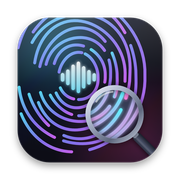
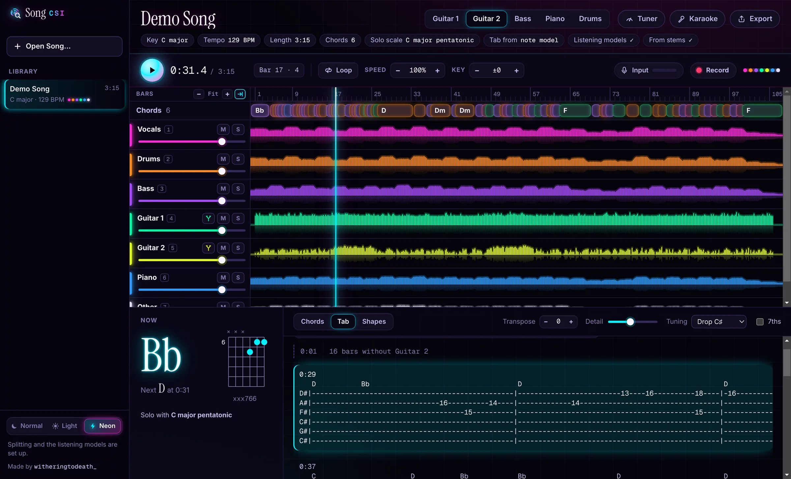

Song CSI
A Mac app that investigates any song you drop on it. It finds the beat, the key and every chord, writes out tabs for guitar, bass, piano and drums, and splits the song into vocals, drums, bass, both guitars, piano and the rest, so you can mute any part and play it yourself.
